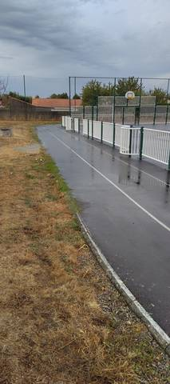
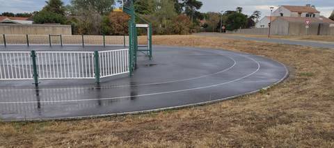

{kind=link}
{kind=link}
Une toute petite piste en goudron, qui fait le tour d'un terrain de basket. Le problème est là, et il est rédhibitoire : le rebord qui borde le city-stade vient empiéter sur le couloir 1, si bien qu'on court à la corde le long d'une bordure surélevée et d'une barrière. Au trot ça passe, mais dès qu'on veut sprinter c'est dangereux. Deux couloirs, aucun autre agrès, rien d'autre autour. Le revêtement est propre et d'aspect récent, ce n'est pas ce qu'on lui reproche ; mais je ne pense pas qu'on puisse en tirer quoi que ce soit pour de l'athlétisme. Accès libre, rien à franchir.
Stade Municipal des Chataigniers
Rue du Stade, 44680 Saint-Hilaire-de-Chaléons · Loire-Atlantique
Stade Municipal des Chataigniers is an athletics venue in Saint-Hilaire-de-Chaléons (Loire-Atlantique), Pays de la Loire, France. It has an asphalt / tarmac running track with 2 lanes. The ministry's register classes it as a standalone track: it is not part of an athletics stadium, and its lap length is stated nowhere. Access is free and unrestricted.
Photos


A photo is surely still missing
Jump pits and throwing areas are what public data describes worst, and what gets photographed least. A close-up of the ground, a covered vault pit, a sand box gone to weeds: each adds what no field carries.
Send a photoNo GitHub account?Track
- Surface
- Asphalt / tarmac
- Track type
- Standalone track
- Lanes
- 2
- Setting
- Outdoor
- Opened
- 2011
Access & amenities
- Free access
- Yes
- Floodlighting
- No
- Changing rooms
- No
- Showers
- No
- Toilets
- No
Visite du 23 août 2026 en soirée : accès libre confirmé, on entre sans rien franchir, conformément à ce que déclare le recensement. Le terrain multisport est ceinturé d'une barrière métallique et d'un grillage ; l'anneau court à l'extérieur de cette clôture et reste accessible indépendamment. Aucun panneau d'horaires ni de règlement n'a été vu.
Athlete reviews
Visite sur place le 23 août 2026, en soirée. Revêtement confirmé au sol : bitume, un enrobé sombre, homogène et d'aspect récent, sans fissure ni nid-de-poule. Deux couloirs sont tracés, marquage blanc net et frais — le recensement ne renseigne aucun nombre de couloirs pour ce site. Ce que la fiche ne pouvait pas dire, et qui décide de tout : l'anneau fait le tour d'un terrain multisport clos, et la bordure béton qui ceinture la plateforme du city-stade empiète sur le couloir 1. On court donc, côté corde, le long d'un rebord surélevé doublé d'une barrière métallique. C'est sans conséquence au trot ; à vitesse de sprint, c'est un risque de cheville et de chute, et cela retire à l'anneau l'essentiel de son intérêt pour l'athlétisme. Le couloir 2 reste dégagé, mais il est alors le seul. Le développement n'a pas été mesuré et n'est renseigné nulle part : ni le recensement, ni OpenStreetMap, ni la visite ne le donnent, et aucun chiffre n'est donc écrit ici. C'est visiblement un petit anneau, très en deçà d'un 400 m. Aucun agrès d'athlétisme n'a été repéré le jour de la visite : pas de sautoir, pas d'aire de lancer, pas de ligne droite distincte de l'anneau. Le champ « agrès » reste vide plutôt que renseigné à une liste vide : l'équipement est un city-stade doté d'une piste périphérique, et non un stade d'athlétisme. Le site porte par ailleurs un panier de basket et un terrain de jeu clos ; le bourg et ses maisons bordent immédiatement l'enceinte.
Other venues in the department
- Complexe Sportif Gauvrit
- Complexe sportif Mickaël Landreau (Arthon-en-Retz)
- Terrain des Loisirs
- Piste de Saint-Léger-les-Vignes
- Piste du Domaine du Collet (Les Moutiers-en-Retz)
- Piste de Saint-Lumine-de-Coutais
Report an error or complete this record
Réf. I441640001 · Source: Data ES + community — Data ES, French ministry for sport, Licence Ouverte 2.0. Records are self-declared and may be incomplete: check access conditions before travelling.